来源：https://s4b4anlr6l.feishu.cn/docx/PMuvdVXNxokYkaxNphAc4lK8n5d
hi，大家好，我是刘岗
二奢行业创业者，之前做了5年产品经理（负责亿级流水产品线），20年加入生财，说来也惭愧，潜水5年，这是第一次发帖正式的帖子。
主要分享下我作为二奢行业的小白，如何从0到1做到GMV百万。在进入这个行业的最早期也拜访了一些从业的圈友，在这里感谢翔叔、大刚、觅塘花开、文博、许无畏给我耐心讲解行业知识，特别感谢凡响全方位的帮助，现在也变成了我的合伙人。
真正了解一件二手奢侈品的流转路径，会发现存在5个价格：回收客户价——同行兜底价——同行贸易价——渠道供货价——客户销售价，在这5个价格之间存在4个价差，每个价差都代表利润，我开始在兼职的状态下同时进行4个业务链路的投产比测试。
这个路径基本占用了总测试精力的70%，一方面需要找到客户，另外一方面还需要找到能兜底的同行。
1.1 线上短视频获客：最有效的内容是奢侈品回收视频，既能圈中卖奢侈品的人，也能圈中买奢侈品的人，但想做出爆款非常难。其次是一人分饰多角的视频，自然流的情况下容易爆，但是人群比较泛。
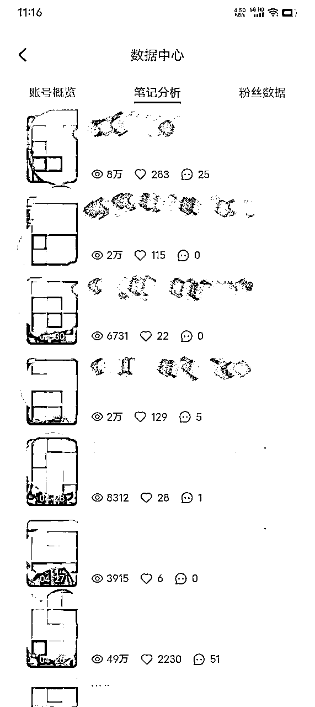
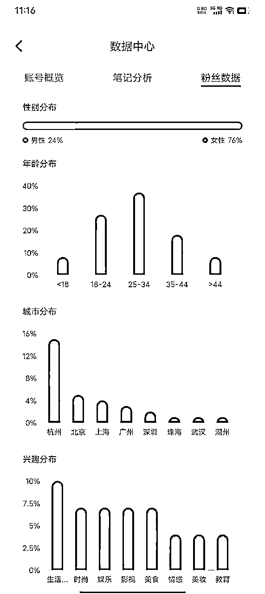
内容发布到抖音、视频号、小红书、快手等，做下来会发现视频号的用户最容易成交，小红书的用户比价严重，抖音更多偏商业，快手用户不具备二奢的商业价值。
随机附上一条视频的引流数据复盘：
| 播放量 | 点赞量 | 新增关注 | 引流数据 | 播放引流比 | |
|---|---|---|---|---|---|
| 视频号 | 10.2万 | 72 | 47 | 4 | 2.55万 |
| 小红书 | 3701 | 21 | 4 | 1 | 0.3万 |
| 抖音 | 9.3万 | 180 | 6 | 2 | 4.65万 |
针对这个模型当时的投产比结论：早期全职干这个链路，只能做到投产比刚好打平。
1.2 线下投放广告：目前人流量比较大的地方就是菜鸟驿站和电梯间，优先选择了难度低的菜鸟驿站。
| 人流量 | 谈判难度 | 投放费用 | |
|---|---|---|---|
| 菜鸟驿站 | 大 | 低 | 低 |
| 电梯间 | 一般 | 高 | 高 |
谈下来了10~20个菜鸟驿站，平均200元/月/驿站，回收需要最旺盛的小区在5~8万/平。
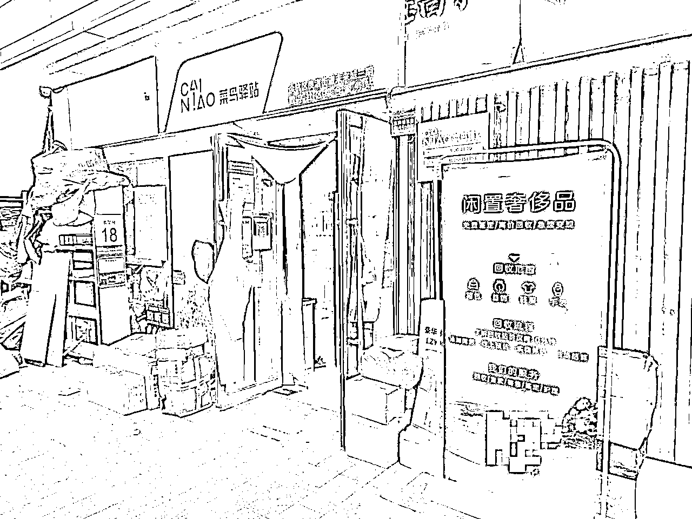
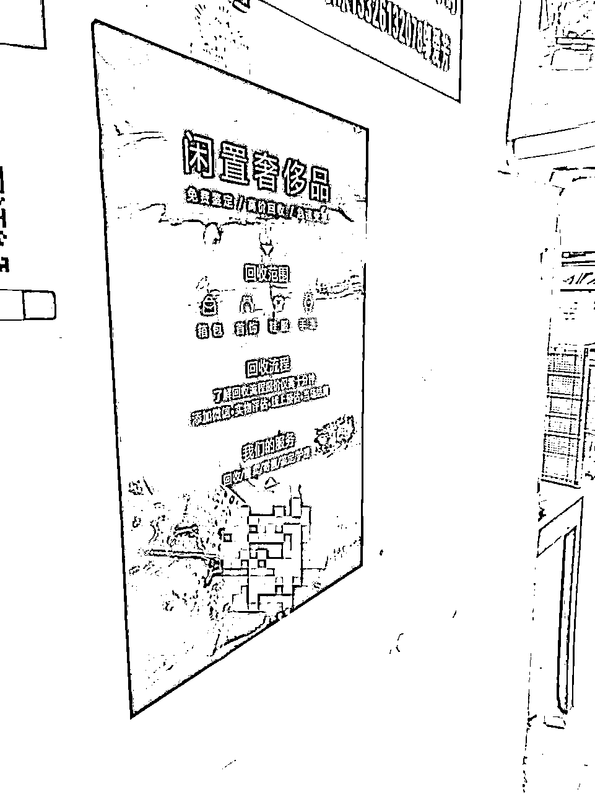
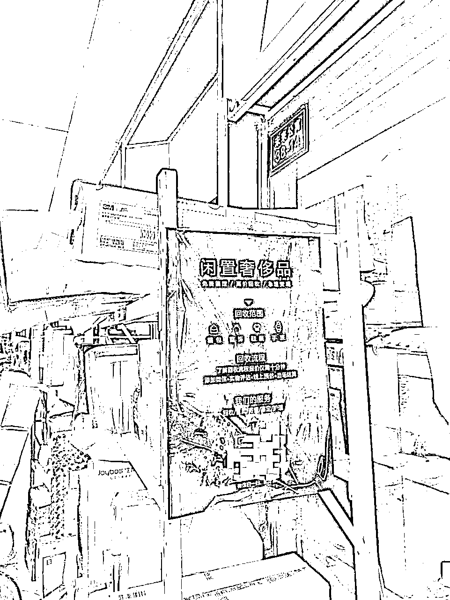
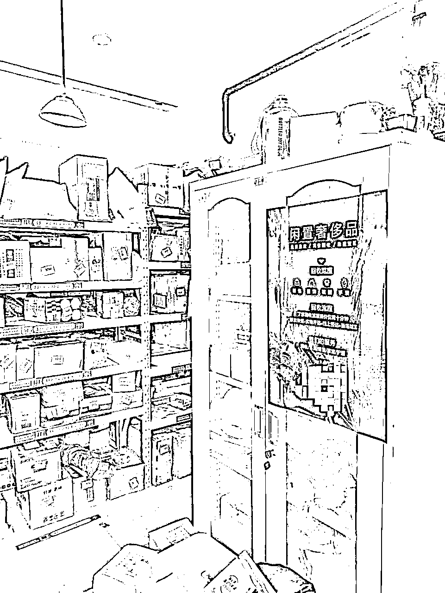
不仅如此，也去过杭州大厦、in77和杭州万象城地下车库塞小卡片。
线下获客跑完发现上限太低，没有爆发的可能性，投产比不如线上获客。
1.3 异业合作：找美发店、干洗店、医美店等等合作，这个方式对于没有资源的人比较难，因为合作需要用户体量相当、成熟的后端资源、高效且专业的响应。
想跟同行贸易，前提需要获取到足够多的同行资源，获取同行基本三个渠道：行业内的人拉入群、挂闲鱼卖货慢慢加同行、上奢侈品鉴定课认识同学。
我用的是第一种方式，7天左右加入100多个二奢同行群，去重之后应该有1万多个同行。
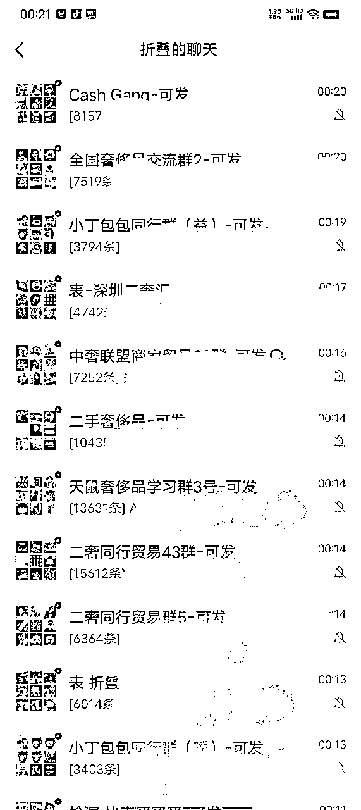
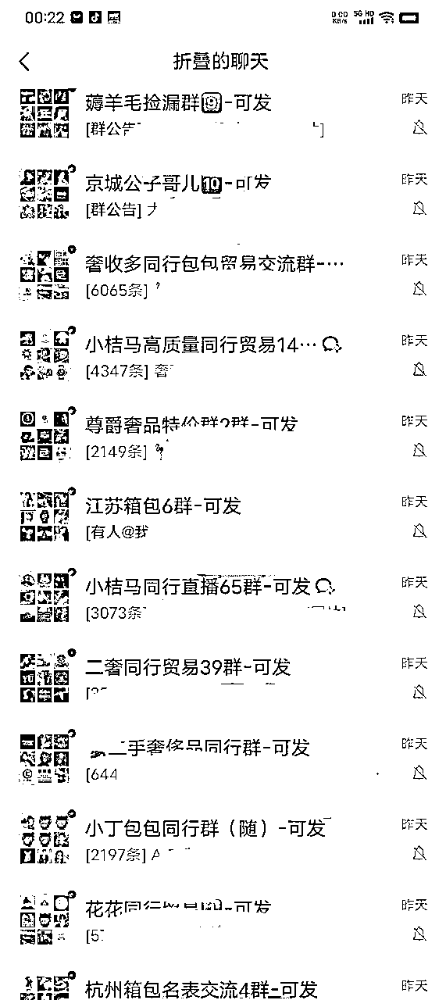
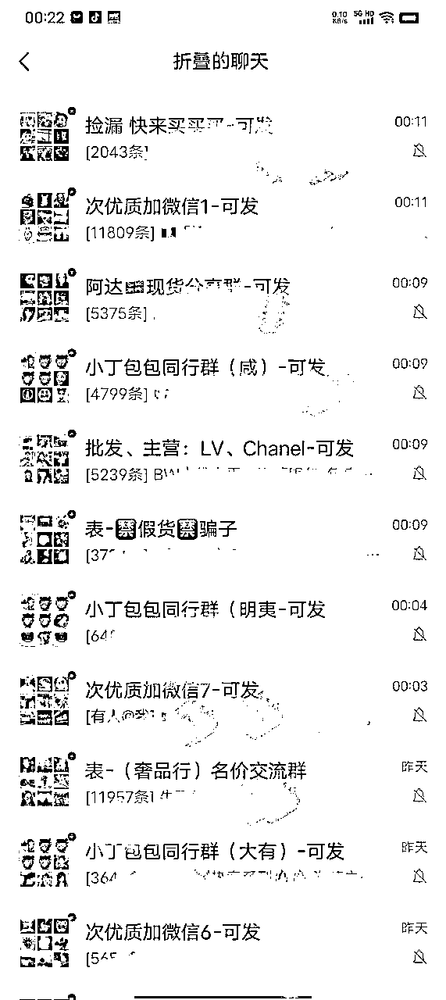
接下来开始在微信群和朋友圈发货品信息，每天至少发三轮，连续测试1周结果不好。现在回头来看无非就是不懂行，拿到的货价格高，甚至比同行能贸易的价格还要高，所以卖不出去。
注意：我当时测试的结果不好，不代表这个链路不好。其实业务链路最适合新手快速学习货品行情，很多在二奢公司上班的打工人，出来自己干，初始资金只有几万快时，都是优先选择这条路。
给渠道供货，需要有资金、BD能力和运营思维。目前国内渠道有3类：二奢直播间、二奢私域销售团队、人流高的二奢实体店。
因为需要比较大的资金量，早期测试阶段本打算放弃，但当时凡响给我说：你搞点我们直播间好卖的货，我给你卖一卖不就行了。我拿出了1万左右，抱着半信半疑的态度，花了3天时间采购了几件货，送过去卖，再也没有管这个链路的进度。
1月份把货送过，4月份所有的货都卖掉且赚到1200元，让我意识到这条路投产比可能是当下最高的，属于“无心插柳柳成荫”。
这条链路不需要压一分钱，只需要跟同行聊好每件货的代理价格，拿到对应货品的细节图，去闲鱼、95分、小红书等平台发布货品信息成交即可，最考验的是流量获取的能力。
真正做会发现销售比回收难10倍，因为销售解决信任和价格的问题，在早期没有实体门店和口碑时，信任是最大的卡点。这个链路我测试了小半个月，一直都有客户询单，主要是因为没有足够的流量获取能力，没有实际收益。
经过第一阶段的测试，发现“回收客户/同行——渠道供货”属于早期投入时间少，产出收益高的链路。
要把这个链路跑通，需要具备三个条件：资金、稳定收货渠道、稳定出货渠道。
二奢属于非标的业务，比较吃行业经验。没有经验时更适合“股权融资”，有行业经验后“债券融资”不错。
因为短时间内找不到合适的股权融资方，又希望更快的跑起来，最终选择杭州大学生创业免息贷款（毕业五年内），资金快速落位。
从效率上看逛展会收货效率最高，而且全国每个月有很多场展会，可以作为稳定收货渠道。接下来的每个月基本草参加10场展会收货。
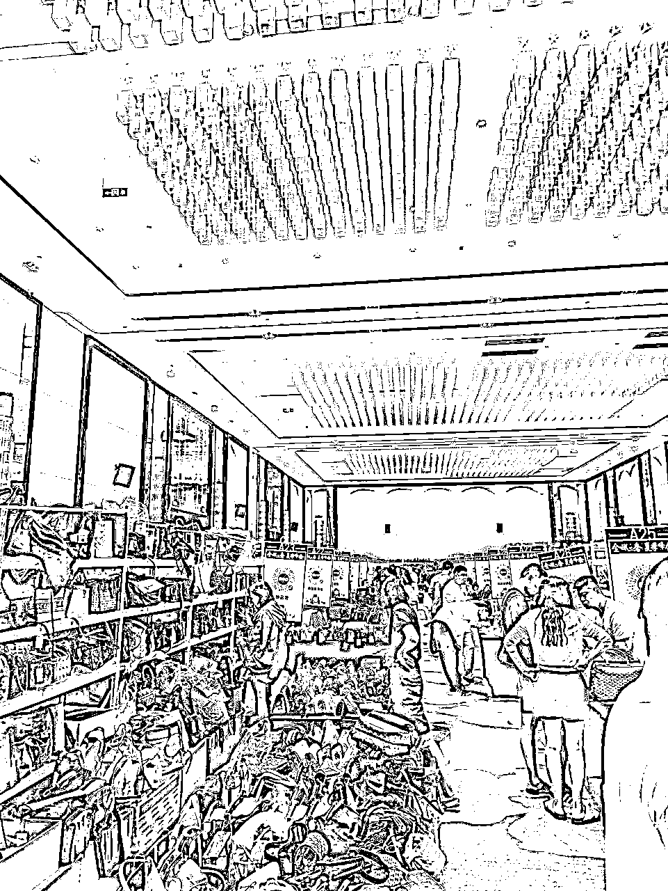
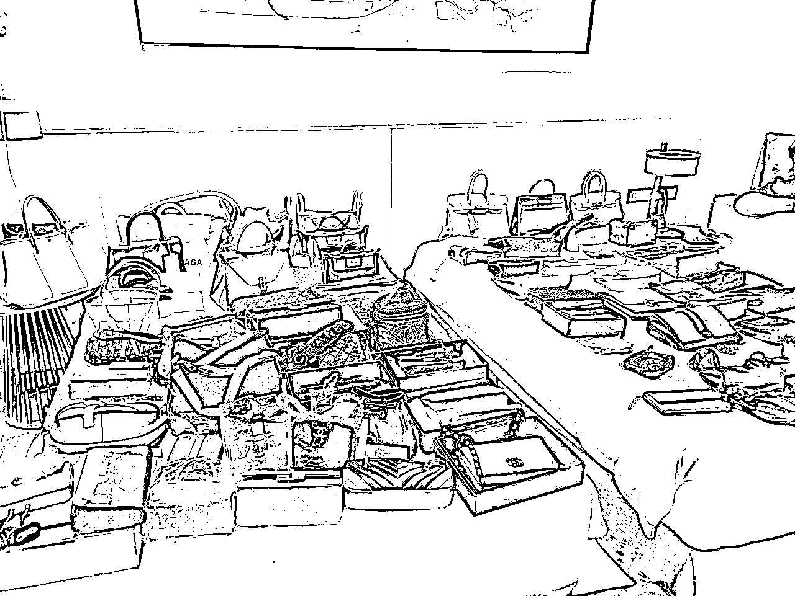
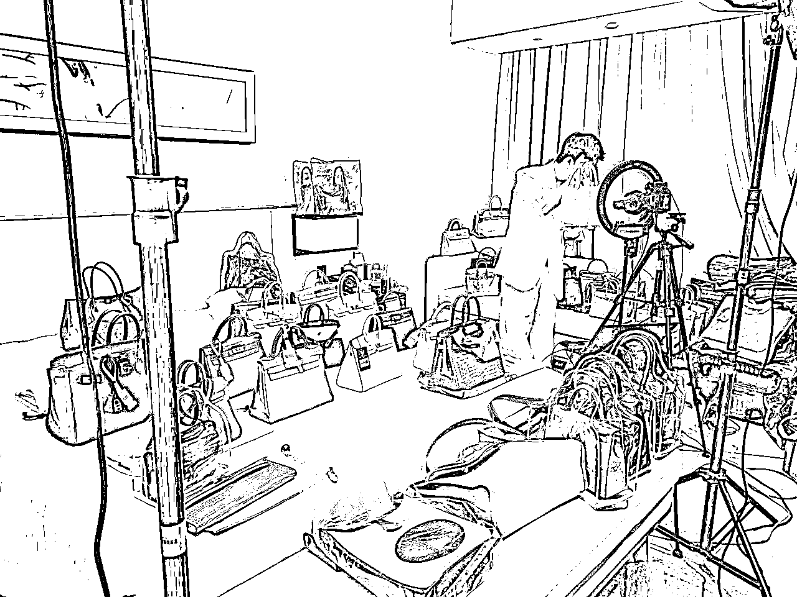
线上可以通过闲鱼和奢当家回收，不过正常1天也就能找到1件合适的，早期只能用来找货。
帮帮虎是同行拍卖平台，有严格的认证，适合真正懂行的人批量采购。
去实体门店打包和收客户结果很不稳定，不适合作为早期的收货渠道。
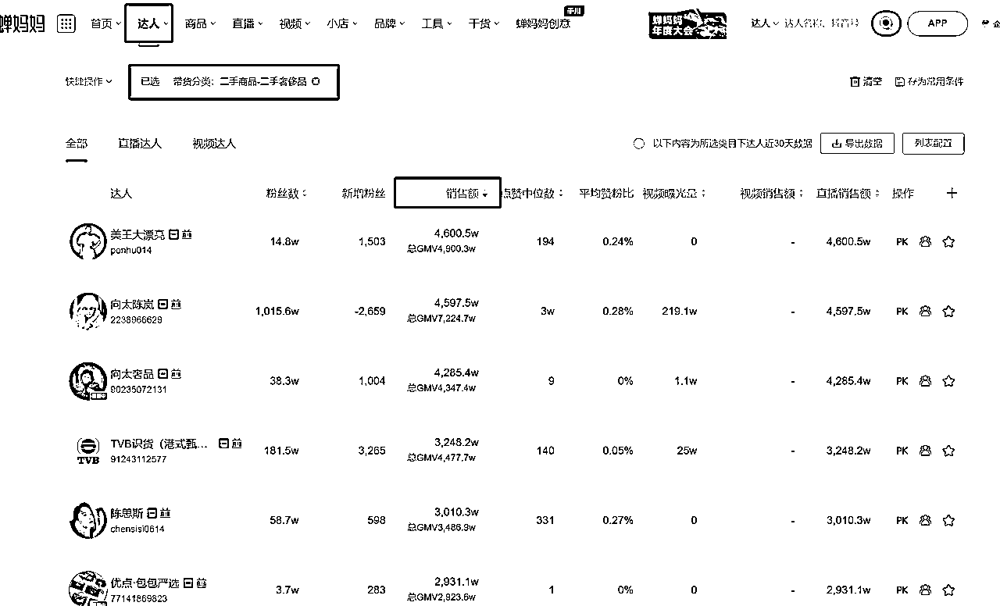
三个条件全部具备之后，就开始进入日常精细化运营。从1个人+2个兼职开始做，基本每2个月销售额和人员就翻一倍，一直到2024年年底，二奢供应链的GMV过百万。二奢供应链一方面在跟国内的渠道合作，也跟日本、东南亚和美国的渠道进行贸易。
当现金流业务搭好之后，开始考虑长期正确的事情。中国过去发展的快，赚钱“太容易”，国人开始大量购买奢侈品，把中国买成了奢侈品购买量最高的国家，目前国内奢侈品存量大。创业者最能感受到2024年市场环境的变化，很多人开始卖出奢侈品套现，但是国内二奢的需求量并不高，供大于求的情况下，具备销售能力公司成为了稀缺资源。
相当于业务链路往前迈了一步，变成同行拿货直接销售给客户，价格空间变为“同行贸易价（——渠道供货价）——客户销售价”。
C端销售需要具备三个条件：获客能力、价格优势、用户信任。因为一直在做二奢供应链，价格具备优势，只剩下获客和信任两个点。
获客能力是所有ToC企业永恒的话题，当然C端做到现在依然没有解决稳定获客问题，倒是在失败中得到的教训。
在做C端的三个月时间里，换了3波C端获客团队，都在用矩阵来做，最高峰的时候开了80个账号，每天发布320条内容。
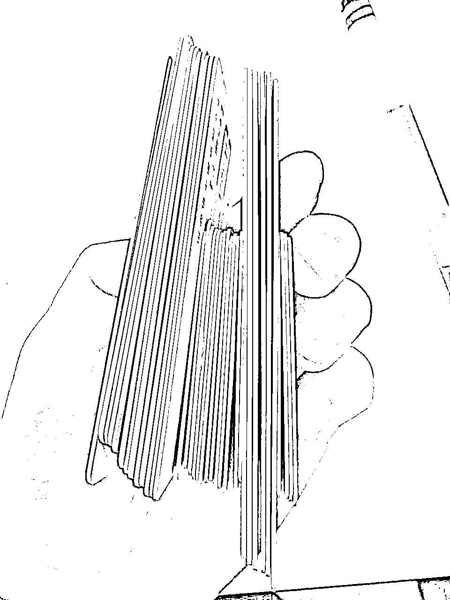
团队小伙伴也做出过百万爆款的内容。
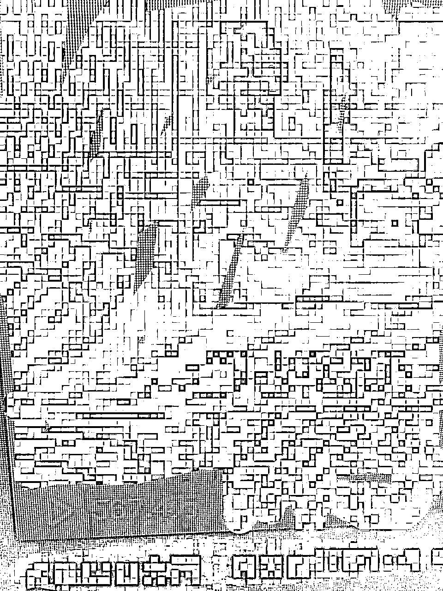
各个平台和账号都有询单，每天也都有客户加微信，但是很难起量，成交侧也比较惨淡。随着时间的推移发现高客单客户需要的决策时间长，会进行大范围对比。长期、稳定发布高质量内容，才能有可能ROI＞1。
信任问题主要集中在货品真假上，可以在卖出后-发货前送到权威的第三方鉴定机构过检。
原本对C端的预期是3个月时间跑正，跑到现在发现这件事情比预想的难10倍，真的想做好需要搭建三年，所以暂时把C端业务砍掉，聚焦精力放大公司现金流。
2025年会继续作为供应链深耕国内渠道，建联更多海外渠道，储备够做3年C端需要的资金和条件，再启动ToC。当然在公司发展过程中也能会得到一笔用于C端发展的融资，加速业务发展。
以上就是我2024年零起的二奢业务，希望对你们有用。如果有海外渠道、获客能力和资金支持的机会，我们都可以深度聊聊。